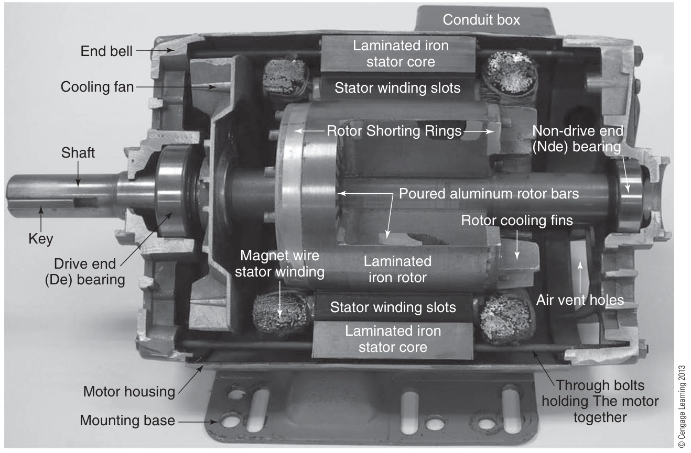
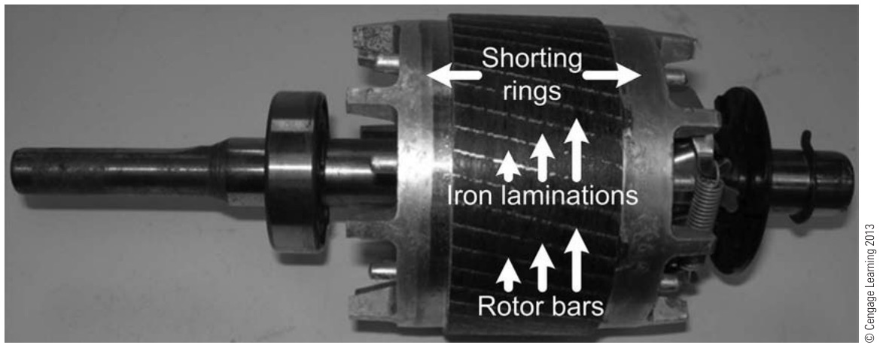
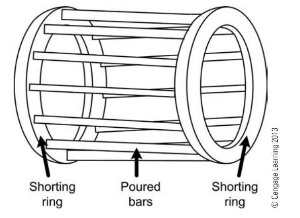
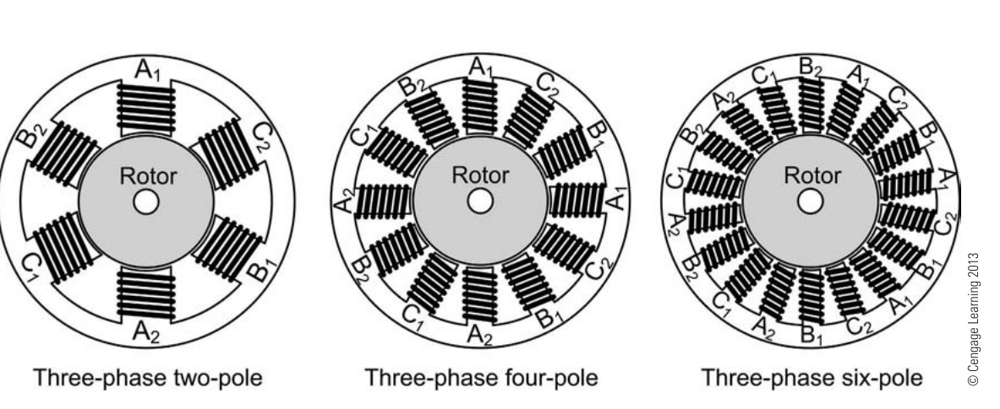

ทุกวงจรที่จะเขียนในวิชานี้ไปจบที่ขั้วของมอเตอร์ ก่อนเขียนวงจรควบคุมจึงต้องรู้จักสิ่งที่อยู่ปลายทาง มอเตอร์เหนี่ยวนำ 3 เฟสแบบกรงกระรอก (squirrel-cage induction motor) พบมากที่สุดในโรงงาน: ไม่มีแปรงถ่าน ไม่มีสายไฟต่อเข้าโรเตอร์ หมุนได้เพราะกระแส 3 เฟสในขดลวดสร้าง สนามแม่เหล็กหมุน หน้านี้ดูว่าสนามหมุนเกิดอย่างไร ความเร็วขึ้นกับอะไร และทำไมกระแสตอนเริ่มเดินสูงจนต้องมีบทที่ 8–9 ทั้งสองบท
Every circuit drawn in this course ends at the terminals of a motor, so before drawing control circuits we look at what sits at the end. The three-phase squirrel-cage induction motor is the most common motor in a factory: no brushes and no wires into the rotor. It turns because three-phase currents in its windings make a rotating magnetic field. This page shows how the field rotates, what sets the speed, and why the starting current is so high that chapters 8 and 9 are needed.
ในแบบวงจรกำลัง มอเตอร์ทั้งตัวเหลือแค่วงกลมที่เขียนว่า M (motor) กับ 3~ (ไฟฟ้ากระแสสลับ 3 เฟส) ขั้ว U1 V1 W1 คือต้นของขดลวดสามชุด ส่วนปลาย U2 V2 W2 อยู่ในกล่องขั้ว (หน้า 1.2) เส้นประสีเขียว PE (protective earth) คือสายดินที่ต่อโครงมอเตอร์ ต้องมีทุกครั้ง
มาตรฐาน IEC 60034-8 กำหนดว่าถ้าต่อ L1 → U1, L2 → V1, L3 → W1 มอเตอร์จะหมุน ตามเข็มนาฬิกาเมื่อมองจากด้านปลายเพลา ภาพจำลองทุกภาพในบทนี้จึงมองจากด้านปลายเพลา
ใน CADe SIMU สัญลักษณ์มอเตอร์มีชื่อ -M และขั้ว U1 V1 W1 PE แบบเดียวกัน (ใบงานที่ 1 หน้า 1.4)
In a power circuit the whole motor shrinks to a circle marked M (motor) and 3~ (three-phase AC). Terminals U1 V1 W1 are the starts of the three windings; their ends U2 V2 W2 sit in the terminal box (page 1.2). The green dashed line PE (protective earth) bonds the motor frame and is always drawn.
IEC 60034-8 says that with L1 → U1, L2 → V1, L3 → W1 the motor turns clockwise seen from the drive end (the shaft end), so every picture in this chapter is seen from the drive end.
In CADe SIMU the motor symbol is named -M with the same terminals U1 V1 W1 PE (lab sheet 1, page 1.4).
ภาพผ่าครึ่งมอเตอร์ (รูป 2-1) แสดงส่วนสำคัญสองส่วน สเตเตอร์ (stator) คือแกนเหล็กแผ่นบางซ้อนกัน (laminated iron core) ที่มีร่องสำหรับวางขดลวดทองแดงสามชุด ปลายขดลวดทั้งหกเส้นออกไปที่กล่องขั้ว (conduit box ในภาพ) ซึ่งเป็นจุดที่ต่อสายไฟเข้ามอเตอร์
โรเตอร์ (rotor) ไม่มีสายไฟต่อเข้าเลย ข้างในเป็นแท่งอะลูมิเนียมหล่อ (rotor bars) ฝังในแกนเหล็ก และปลายทั้งสองข้างลัดวงจรด้วยวงแหวน (shorting rings) ถ้าถอดแกนเหล็กออก ตัวนำที่เหลือจะหน้าตาเหมือนกรงให้กระรอกวิ่ง (รูป 2-7) จึงเรียกว่า โรเตอร์กรงกระรอก สนามหมุนของสเตเตอร์เหนี่ยวนำกระแสในแท่งตัวนำเหล่านี้ กระแสกับสนามจึงสร้างแรงบิด ส่วนประกอบอื่นคือเพลา ตลับลูกปืนด้านขับ (drive end) และด้านตรงข้าม พัดลมระบายความร้อน และฝาครอบหัวท้าย
The cutaway (Fig. 2-1) shows the two main parts. The stator is a laminated iron core with slots that hold the three copper windings; their six ends come out to the terminal box (the "conduit box" in the picture), where the supply is connected.
The rotor has no wires connected to it. Inside are cast aluminium bars set in an iron core, shorted at both ends by rings. Without the iron, the bars and rings look like a squirrel's running wheel (Fig. 2-7), hence the squirrel-cage rotor. The stator's rotating field induces currents in these bars, and current and field together make the torque. The other parts are the shaft, the drive-end and non-drive-end bearings, the cooling fan and the end bells.



↓ ตอนที่ 2: ขดลวดสามชุดวางรอบสเตเตอร์อย่างไร และจำนวนขั้วมาจากไหน
↓ Part 2: how the three windings sit round the stator, and where the number of poles comes from
รูป 3-16 วาดขดลวดของสเตเตอร์สามแบบ ตำราอเมริกันเรียกเฟสว่า A B C ซึ่งตรงกับ U V W ในมาตรฐาน IEC นับเฉพาะขดลวดของเฟสเดียว (A): ภาพซ้ายมี A1 กับ A2 เป็นขั้ว N หนึ่งขั้วและ S หนึ่งขั้ว จึงเป็น มอเตอร์ 2 ขั้ว ภาพกลางมีขดลวดเฟส A สี่ชุด จึงเป็น 4 ขั้ว และภาพขวาเป็น 6 ขั้ว
ยิ่งมีขั้วมาก สนามยิ่งหมุนช้า เพราะในหนึ่งคาบของกระแส สนามขยับได้แค่ระยะของขั้วหนึ่งคู่ ที่ 50 Hz มอเตอร์ 2 ขั้วหมุน 3000 rpm, 4 ขั้ว 1500 rpm, 6 ขั้ว 1000 rpm ลองเลือกจำนวนขั้วในภาพจำลองส่วน A ด้านล่าง แล้วนับขั้ว N กับ S ดู
Fig. 3-16 draws three stators. American books call the phases A, B and C, the same as U, V and W in IEC. Count the coils of one phase (A) only: the left stator has A1 and A2, one N pole and one S pole, so it is a 2-pole motor; the middle one has four phase-A coils, so it is 4-pole; the right one is 6-pole.
The more poles, the slower the field turns, because in one cycle of the current the field moves on by only one pair of poles. At 50 Hz a 2-pole motor runs at 3000 rpm, a 4-pole at 1500 rpm and a 6-pole at 1000 rpm. Choose the number of poles in the simulation of section A below and count the N and S poles.

↓ ส่วน A: ป้อนกระแส 3 เฟสแล้วดูสนามหมุน
↓ Section A: feed three-phase currents and watch the field rotate
วงแหวนคือสเตเตอร์ สีแดงคือขั้วเหนือ (N) สีฟ้าคือขั้วใต้ (S) ในภาพแบบ 2 ขั้ว ลูกศรสีแดง เหลือง ฟ้า คือสนามของขดลวด U V W แต่ละชุดตามแนวแกนของมัน ยาวสั้นและกลับทิศตามกระแสในกราฟด้านขวา ส่วน ลูกศรสีขาวคือผลรวม: ยาวเท่าเดิมตลอดและหมุนไปเรื่อย ๆ โดยชี้ไปทางขั้ว S ของสเตเตอร์ (เส้นแรงออกจากขั้ว N ข้ามช่องอากาศผ่านโรเตอร์ไปเข้าขั้ว S) จุดและกากบาทบนขดลวดบอกทิศกระแส (จุด = ไหลออกจากจอ) แถบสีส้มบนโรเตอร์ช่วยให้เห็นว่าโรเตอร์ช้ากว่าสนามเล็กน้อย ลองกด "สลับ L1 กับ L2" และเปลี่ยนจำนวนขั้ว
The ring is the stator: red is a north pole (N), blue a south pole (S). In the 2-pole picture the red, yellow and blue arrows are the fields of windings U, V and W along their own axes; they grow, shrink and reverse with the currents on the right. The white arrow is their sum: it keeps the same length and keeps turning, pointing at the stator's S pole (the flux leaves the N pole, crosses the air gap and the rotor, and enters the S pole). Dots and crosses on the coil sides show the current direction (dot = out of the screen). The orange bar on the rotor shows it running a little slower than the field. Press "Swap L1 and L2" and change the number of poles.
ป้ายพิกัดของมอเตอร์ 3 เฟสเขียนว่า 50 Hz และ 1430 min⁻¹ (รอบต่อนาที) จงหา (ก) จำนวนขั้ว \(P\) และความเร็วซิงโครนัส \(n_s\) (ข) สลิปที่พิกัดเป็นเปอร์เซ็นต์
A three-phase motor nameplate reads 50 Hz and 1430 min⁻¹ (rpm). Find (a) the number of poles \(P\) and the synchronous speed \(n_s\), (b) the rated slip in per cent.
กราฟซ้ายคือแรงบิด (สีชมพู) และกระแส (สีเหลือง) ของมอเตอร์ที่ความเร็วต่าง ๆ เป็นจำนวนเท่าของค่าพิกัด เส้นประสีเขียวคือแรงบิดที่งานต้องการ มอเตอร์จะหมุนนิ่งที่จุดที่สองเส้นตัดกัน เลื่อนภาระแล้วดูสลิปกับกระแสเปลี่ยน จากนั้นกด เริ่มเดิน: กราฟขวาแสดงกระแสระหว่างเร่งความเร็ว กระแสสูงหลายเท่าตลอดช่วงเร่ง แล้วค่อยลดลงเมื่อใกล้ความเร็วพิกัด
On the left are the motor's torque (pink) and current (yellow) at each speed, as multiples of their rated values. The green dashed line is the torque the load needs; the motor settles where the two cross. Move the load and watch the slip and current change, then press Start: the right-hand plot shows the current while the motor speeds up. It stays several times the rated value for the whole run-up and only drops near rated speed.
มอเตอร์ 1.5 kW 400 V ต่อสตาร์ ความเร็วพิกัด 1430 rpm กระแสพิกัด 3.35 A ผู้ผลิตบอกว่ากระแสเริ่มเดินเป็น 6.5 เท่า และแรงบิดเริ่มเดินเป็น 2.2 เท่าของค่าพิกัด จงหา (ก) แรงบิดพิกัด (ข) กระแสเริ่มเดิน (ค) แรงบิดเริ่มเดิน
A 1.5 kW, 400 V motor connected in star has a rated speed of 1430 rpm and a rated current of 3.35 A. The maker gives a starting current of 6.5 times and a starting torque of 2.2 times the rated values. Find (a) the rated torque, (b) the starting current, (c) the starting torque.